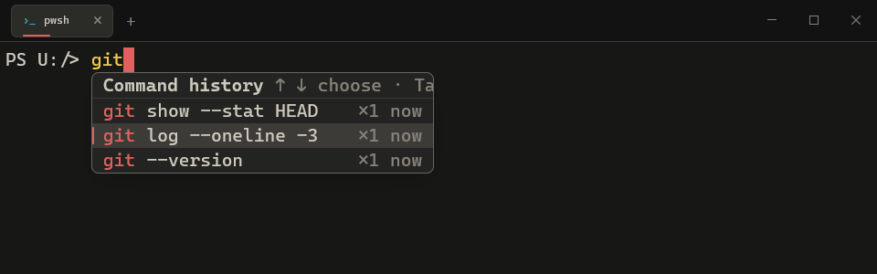
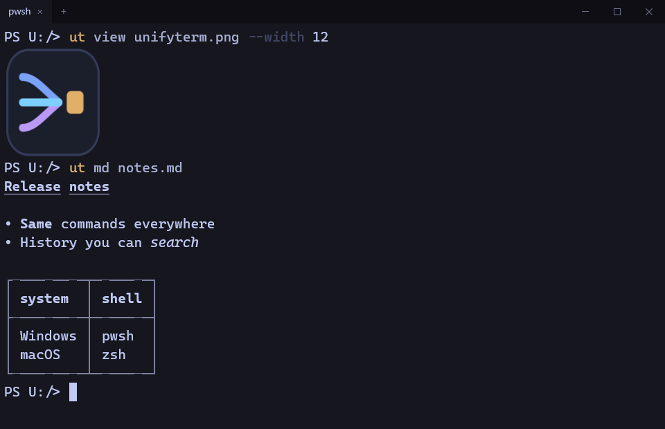
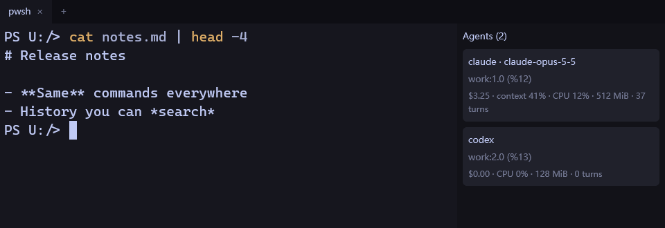
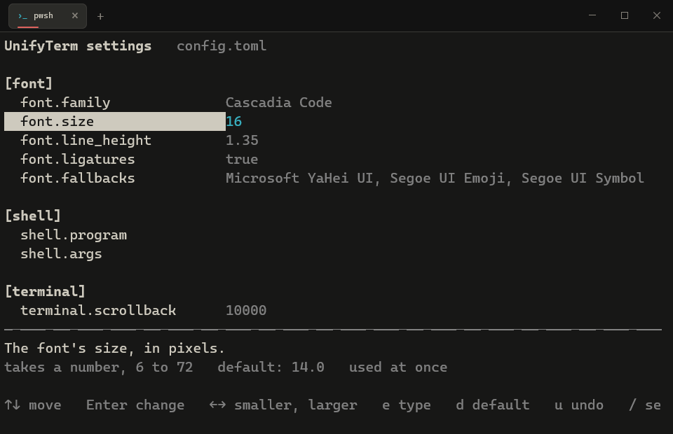

![UnifyTerm on Windows, in PowerShell: cat Cargo.toml | grep -n version prints three numbered lines; echo '[1,2,3]' | jq add prints 6; ut view unifyterm.png shows the logo as a picture, in the terminal.](img/hero.png)
UnifyTerm
One terminal across Windows, macOS and Linux.
Use the same commands across Windows, macOS and Linux.
UnifyTerm is a cross-platform terminal application that works with your existing shell and provides a consistent set of Unix utilities, including cat, grep, sed and jq.
On Windows, you can use these commands without installing WSL or Git Bash.
- Application 终端类型
- Desktop terminal
- Supported shells 支持 Shell
- PowerShell, cmd, bash, zsh, fish
- Built-in commands 内置命令
- 99 on Windows, 114 on Linux
- Built with 技术栈
- Rust
- License 开源协议
- MIT
- Windows10 (1809) or later
- macOS11 or later
- Linuxx86_64, Vulkan
brew install newdee/tap/unifyterm
macOS and Linux, with Homebrew.
A consistent command environment
Windows and Unix systems handle many everyday command-line tasks differently. The same operation may require different commands depending on the operating system.
UnifyTerm provides a consistent set of Unix utilities across Windows, macOS and Linux. Common commands such as cat, ls, grep, find, sed and jq work the same way across platforms.
It also handles platform-specific path formats and wildcard expansion, making commands and scripts easier to reuse across systems.
On Windows, these commands work directly without setting up a separate Unix shell environment.
The Windows build currently includes 99 commands covering common file operations, text processing and data queries.
All 99 commands on Windows
[ arch b2sum base32 base64 basename basenc cat cksum cmp comm cp csplit cut date dd df diff dir dircolors dirname du echo env expand expr factor false find fmt fold grep head hostid hostname join jq kill link ln ls md5sum mkdir mktemp more mv nice nl nohup nproc numfmt od paste pathchk pr printenv printf ptx pwd readlink realpath rm rmdir sed seq sha1sum sha224sum sha256sum sha384sum sha512sum shred shuf sleep sort split sum sync tac tail tee test timeout touch tr true truncate tsort tty uname unexpand uniq unlink uptime vdir wc which whoami xargs yes

Command history and search
UnifyTerm stores command history locally in a SQLite database.
Each entry includes the command, working directory, exit status and execution time. As you type, matching commands appear based on your history and current working directory.
- Commands used in the current directory receive higher priority.
- Failed commands receive lower priority.
- Use Ctrl+N to navigate suggestions.
- Press Enter to select a command, then press it again to execute.
- Passwords, tokens and keys are filtered before storage.
History is stored in a local database that can be moved between machines. Commands recorded on Windows can also be used on Linux.

Images, video and Markdown in the terminal
A terminal doesn't have to display text only.
UnifyTerm can display images, play videos and render Markdown directly in the terminal.
Images and video
ut view photo.png
ut view clip.mp4Video playback requires FFmpeg and currently does not support audio.
Markdown
ut md README.mdMarkdown documents are rendered directly in the terminal, including headings, lists, tables and links.
When the terminal does not support image rendering, UnifyTerm falls back to text output where possible.

Command assistance
UnifyTerm provides both local command correction and LLM-powered assistance.
Local command correction
When a command is mistyped, UnifyTerm checks available commands and suggests a correction. This works locally without an internet connection or an AI model.
AI-powered explanations
After configuring an LLM, you can use Ctrl+Shift+E to get explanations of commands and their arguments. UnifyTerm can also provide command completion suggestions as you type.
AI assistance is disabled by default.
Before you enable it, UnifyTerm shows what information will be shared and asks you to agree once. Passwords, tokens and keys are filtered from every request. You decide whether to enable AI assistance.

Integration with AI agents
UnifyTerm provides an MCP server and a Skill file for AI coding agents.
The MCP server currently exposes four read-only tools:
- Search command history.
- List recently executed commands.
- List available commands.
- Retrieve command help.
The MCP server does not provide command execution capabilities. Agents cannot execute shell commands through these tools.
For example, add UnifyTerm to Claude Code:
claude mcp add unifyterm -- ut mcpThe accompanying Skill describes available commands and platform-specific behavior, helping agents work with a consistent command environment across operating systems.
When used alongside keepane, UnifyTerm can also show information about running agents in the terminal, including model, cost, context usage and memory usage.

Settings in the terminal
UnifyTerm keeps its settings in one file, config.toml. ut setting shows every setting and lets you change it from the keyboard.
ut setting- Use the arrow keys to move and Enter to change a value. Fonts, shells and other choices open a list to pick from; ← and → adjust numbers.
- Each setting shows what it does, the values it accepts and its default.
- Invalid values are rejected with the reason, and nothing is written.
- Comments and the order of your file are preserved.
Changes to the font, colors and padding apply immediately in open windows. Other settings apply later, for example to the next tab or after a restart; the settings screen shows when each one applies.
For example, on Windows and macOS the tab row also serves as the title bar. Set window.system_title_bar to true to use the system title bar instead.
The same settings are available to scripts and agents:
ut setting list
ut setting set font.size 16
See it in action
A recording of UnifyTerm running in a real environment: command execution, history search, content viewing and agent integration.
Current limitations
UnifyTerm is currently at version 0.6.1, and some areas are still incomplete:
- The Windows and macOS builds are not code-signed yet. A SmartScreen or Gatekeeper security prompt may appear on first launch.
- The macOS build passes CI builds and tests, but has seen little hands-on use so far.
- Video playback requires FFmpeg and currently does not support audio.
- PowerShell's native Tab completion still uses Windows-style path separators.
- In its own window, UnifyTerm currently renders images through the Kitty graphics protocol only. When
ut viewruns in other terminals, it can also output Sixel and iTerm2 images.
The project currently includes 355 test cases, plus 178 tests that drive the desktop application.
Installation
macOS / Linux
With Homebrew:
brew install newdee/tap/unifytermOr with the install script:
curl -fsSL https://raw.githubusercontent.com/newdee/unifyterm/main/install.sh | shWindows
With Scoop:
scoop bucket add newdee https://github.com/newdee/scoop-bucket
scoop install unifytermOr with the PowerShell install script:
irm https://raw.githubusercontent.com/newdee/unifyterm/main/install.ps1 | iexPrebuilt packages are also available from GitHub Releases: MSI, ZIP, DMG, DEB and AppImage.
The install scripts verify the SHA-256 checksum before installing.
For more configuration options, environment variables and usage instructions, see the GitHub repository.